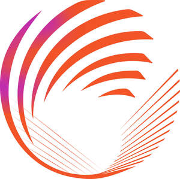

Trade Mark Journal No.2025/020 16 May 2025
UK00004167055 28 February 2025 (9,16,18,24,25,28,35,38,41)
Mark 1

Mark 2
- Class 9
- Apparatus and instruments for recording, transmitting, reproducing or processing sound, images or data; apparatus for receiving, recording and downloading sounds and images; recorded and downloadable media, computer software, blank digital or analogue recording and storage media; digital communications apparatus and instruments; electrical and electronic apparatus for use in the reception of satellite, terrestrial or cable broadcasts; signal decoders; apparatus for processing digital video signals; audio and/or video file recorders and/or players; headphones; earphones; audio and/or video recordings; recorded programmes for television and for radio; motion picture films; animated cartoons; photographic transparencies and photographic and cinematographic films prepared for exhibition purposes; magnetic data carriers; recording discs; compact discs, DVDs and other digital recording media; CD-ROMs; cassettes; video cassettes; phonographic records; pre-recorded sound storage media, image storage media and data storage media; electronic data storage media; data storage devices; memory cards; media content; downloadable audio and video recordings; downloadable music, sounds, images, graphics, videos, games, text or data; screen savers; downloadable electronic publications; publications in electronic format; printed publications in electronically readable form; electronic books and electronic book readers; electronic scoreboards; calculators; data processing equipment; computers; computer hardware and parts and fittings therefor; portable computers, including laptop computers and tablet computers; covers, cases, chargers, speakers, headsets, data input devices and media storage, all for portable computers; computer mice; mouse mats; computer software; computer programs; downloadable computer software; software downloadable from the Internet and other computer and communications networks; computer games programs; games for video game machines; computer application software; application software for mobile communication devices; downloadable digital files authenticated by non-fungible tokens [NFTs]; downloadable images, graphics, photographs, videos, text, sounds and/or music authenticated by non-fungible tokens [NFTs]; digital art; digital art authenticated by non-fungible tokens [NFTs]; downloadable computer software and computer graphics featuring virtual goods for use online and in online virtual worlds; downloadable virtual clothing, footwear, headwear, bags and sports equipment; cameras and video cameras; covers and cases for cameras and video cameras; covers and cases for photographic apparatus and instruments; projection apparatus and screens; digital photo frames; binoculars; magnifying glasses; eye glasses, spectacles and sunglasses and cases, chains, straps, cords and frames therefor; holograms; egg timers; pedometers; decorative magnets; batteries; battery chargers; electrical and electronic communications and telecommunications apparatus; telephones, mobile phones, smartphones and video phones and transmitters, receivers, covers, cases, fascia, holders, chargers, speakers, headsets, hands-free-kits, software, sounds, graphics, data input devices and media storage therefor; straps for mobile phones; cards bearing machine readable information; electronic, magnetic and optical identity cards; payment cards; smart cards; credit cards and debit cards; telephone cards; electric signs; whistles; articles of protective clothing, footwear and headgear; protective helmets; sports helmets; mouth protectors including gum shields; sports whistles; parts and fittings for all of the aforesaid goods.
- Class 16
- Paper; cardboard; printed matter; stationery; artists’ materials; paint brushes; office requisites; instructional and teaching materials; plastic materials for packaging; newspapers, magazines and printed publicity and promotional material; printed programmes; brochures; leaflets; comic books; diaries; personal organisers; address books; posters; pictures; albums; photographs; photograph albums; autograph books; autographed photographs and autographed paper items; scrap books; annuals; catalogues; manuals; files and folders; binders; programme binders; notepaper; note pads and note books; writing pads; drawing pads; jotters; envelopes; labels; book markers; bookends; paperweights; stencils; maps; charts; wall charts; calendars; tickets; timetables; printed forms; certificates; menus; gift vouchers; philatelic stamps; printed patterns; paper flags and pennants; paper banners; signs and advertisement boards of paper and cardboard; stickers; cards; trading cards; greeting cards; birthday cards; postcards; gift wrap and packaging paper; gift tags; gift bags; carrier bags; packaging bags of paper; letter openers; blackboards; chalk; writing instruments; drawing instruments; pens; pencils; pencil sharpeners; erasers; rulers; cases and boxes for pens and pencils; pen and pencil holders; ink; ink pads; rubber stamps; paint boxes; engravings and etchings; paper towels; paper handkerchiefs; toilet paper; beer mats; paper and cardboard coasters; paper and cardboard place mats; paper table cloths and napkins; money clips.
- Class 18
- Luggage; bags; travelling bags and cases; trunks; sports bags; athletic bags; kit bags; gym bags; garment bags; boot and shoe bags; holdalls; back packs; rucksacks; folding bags and cases; duffel bags; school bags; satchels; brief cases; shoulder bags; waist bags; belt bags; handbags; pocketbooks; tote bags; shopping bags; toilet bags; covers for bags; liners for bags; wallets; purses; card wallets; card cases; business card cases; card holders; luggage label holders; luggage tags; luggage straps; umbrellas and parasols; walking sticks; leather straps; reins for guiding children; collars, leads and leashes for animals; clothing and covers for animals; parts and fittings for all of the aforesaid goods.
- Class 24
- Textiles and substitutes for textiles; household linen; curtains of textile or plastic; kitchen and table linen; table covers; textile napkins and serviettes; table cloths; tea towels; bar cloths; textile piece goods; textiles for making articles of clothing; mats of linen; textile place mats; bath linen; towels and flannels; beach towels; bed linen and blankets; bed covers; bed sheets; pillow cases; valances; duvet covers; quilts; sleeping bags; sleeping bag sheet liners; travelling rugs; coverings for furniture; bean bag covers; fabric for use in the manufacture of bags; fibre fabrics for use in the manufacture of linings of bags; handkerchiefs of textile; wall hangings; flags and pennants, not of paper; banners; bunting.
- Class 25
- Clothing, footwear, headwear; articles of outer clothing; sportswear; leisurewear; sports kits; sports shirts; sports shorts; sports socks; football shirts; football shorts; football socks; replica football kits; replica football shirts; replica football shorts; replica football socks; training clothing; tracksuits; training pants; sweatshirts; sweatpants; jackets; coats; waterproof clothing; anoraks; shirts; tops; t shirts; polo shirts; vests; singlets; knitwear; jerseys; pullovers; sweaters; hooded tops; cardigans; waistcoats; suits; trousers; pants; shorts; ties; underwear; briefs; nightwear; swimwear; socks; gloves; mittens; scarves; wristbands; headbands; ready-made clothes linings; shoes; boots; sandals; slippers; sports shoes; training shoes; football boots and shoes; studs for football boots; hats; caps; sun visors; belts; aprons (clothing); uniforms; articles of clothing, footwear and headgear for babies and children; bodysuits; romper suits; sleep suits; bibs; baby boots; face coverings (clothing); face masks (clothing).
- Class 28
- Games, toys and playthings; video game apparatus; gymnastic and sporting articles; decorations for Christmas trees; sports games; sporting equipment; sports training apparatus; body training apparatus; bags adapted for carrying sporting articles and equipment; miniature replica football kits; balls for games; football equipment; footballs; reduced sized footballs; goal posts; reduced sized goal posts; goal nets; gloves for games; gloves for sports; football gloves; protective padding and supports for sports; shin pads; shin guards; knee pads and knee guards for sports use; elbow guards; goalkeeper pads; hurdles for use in athletics training; blocking dummies; racket grip tapes; darts; dart flights; indoor football tables; table football tables; board games; jigsaws; puzzles; playing cards; lottery scratch cards; kites; balloons; models being toys; infant toys; toy mobiles; plush toys; stuffed toy animals; teddy bears; dolls; action figure toys; toy vehicles; toy figurines; toy musical boxes; inflatable toys; wooden toys; toy torches; toy jewellery; soap bubbles [toys]; bubble making wand and solution sets; confetti; plastic and paper party hats; sponge hands in the nature of novelties; rattles; costume masks; costumes being children’s playthings; coin and counter-operated games; electronic games; games consoles; handheld electronic games; handheld game consoles; controllers for game consoles and video game machines; games adapted for use with television receivers; apparatus for electronic games adapted for use with an external display screen or monitor; Christmas crackers; artificial Christmas trees and stands; pet toys; parts and fittings for all of the aforesaid goods.
- Class 35
- Advertising; business management; business administration; office functions; business management of footballers; promotional management for footballers; football scouting services; advertising services provided via the Internet; provision and rental of advertising space, time and media; provision of space on websites for advertising goods and services; marketing and promotional services; promotion of sports competitions and events; event marketing; promoting the goods and services of others by arranging for sponsors to affiliate their goods and services with sports competitions; public relations and publicity services; merchandising; organisation, arrangement and conducting of exhibitions and events for advertising and promotional purposes; loyalty, incentive and bonus program services; organisation, operation and supervision of loyalty and incentive schemes; administration of membership schemes; organisation, arrangement and conducting of competitions and prize draws for commercial or advertising purposes; production of television and radio advertisements; auctioneering; arranging and conducting trade fairs; opinion polling; data processing; provision of business information; trade show and commercial exhibition services; business advice, assistance and business management consultancy services; retail services connected with the sale of paints, varnishes, lacquers, preservatives against rust and against deterioration of wood, colorants, mordents, raw natural resins, metals in foil and powder form for painters, decorators, printers and artists, coatings, line-markings for fields, tracks, stadia, sports locations and roads, bleaching preparations and other substances for laundry use, cleaning, polishing, scouring and abrasive preparations, soaps, perfumery, essential oils, cosmetics, hair lotions, dentifrices, deodorants for personal use, perfumes, toiletries, creams, gels, lotions, foams, soaps, talcum powder, shampoos, conditioners, sprays, body paint, deodorants, antiperspirants, body and facial scrubs, breath freshners, preparations for the care, treatment and cleansing of the skin, hair and the body, non-medicated toilet preparations, preparations for the bath and shower, bath crystals, pre-shave and aftershave preparations, shaving preparations, cosmetic preparations, non-medicated baby care preparations, laundry detergent and fabric conditioners, vegetable dye skin transfers, boot cream and polish, car cleaning preparations, cushions filled with fragrant or perfumed substances, pot pourri, room fragrancing products, tissues impregnated with non-medicated preparations for personal use, pharmaceutical and veterinary preparations, sanitary preparations for medical purposes, dietetic substances adapted for medical use, food for babies, plasters, materials for dressings, material for stopping teeth, dental wax, disinfectants, preparations for destroying vermin, fungicides, herbicides, foods and beverages adapted for medical purposes, preparations for destroying vermin, fungicides, herbicides for the care of grass and lawns, insecticides, pesticides, nematicides for the care of lawns, analgesic and muscle strain preparations for human use, bandages and dressings, first aid kits and boxes; retail services connected with the sale of common metals and their alloys, small items of metal hardware, pipes and tubes of metal, safes, ores, unwrought and partly wrought common metals, signs, information and advertising displays, locks and keys of metal, vehicle badges, badges, trophies, keys, key blanks, plaques, number plates, ornaments, statues, statuettes, figurines, works of art, boxes, money boxes, bins, clothes hangers and clothes hooks, bronzes, parts and fittings for all of the aforesaid goods; retail services connected with the sale of apparatus and instruments for recording, transmitting, reproducing or processing sound, images or data, apparatus for receiving, recording and downloading sounds and images, recorded and downloadable media, computer software, blank digital or analogue recording and storage media, digital communications apparatus and instruments, electrical and electronic apparatus for use in the reception of satellite, terrestrial or cable broadcasts, signal decoders, apparatus for processing digital video signals, audio and/or video file recorders and/or players, headphones, earphones, audio and/or video recordings, recorded programmes for television and for radio, motion picture films, animated cartoons, photographic transparencies and photographic and cinematographic films prepared for exhibition purposes, magnetic data carriers, recording discs, compact discs, DVDs and other digital recording media, CD-ROMs, cassettes, video cassettes, phonographic records, pre-recorded sound storage media, image storage media and data storage media, electronic data storage media, data storage devices, memory cards, media content, downloadable audio and video recordings, downloadable music, sounds, images, graphics, videos, games, text or data, screen savers, downloadable electronic publications, publications in electronic format, printed publications in electronically readable form, electronic books and electronic book readers, electronic scoreboards, calculators, data processing equipment, computers, computer hardware and parts and fittings therefor, portable computers, laptop computers, tablet computers, covers, cases, chargers, speakers, headsets, data input devices and media storage, all for portable computers, computer mice, mouse mats, computer software, computer programs, downloadable computer software, software downloadable from the Internet and other computer and communications networks, computer games programs, games for video game machines, computer application software, application software for mobile communication devices, downloadable digital files authenticated by non-fungible tokens [NFTs], downloadable images, graphics, photographs, videos, text, sounds and/or music authenticated by non-fungible tokens [NFTs], digital art, digital art authenticated by non-fungible tokens [NFTs], downloadable computer software and computer graphics featuring virtual goods for use online and in online virtual worlds, downloadable virtual clothing, footwear, headwear, bags and sports equipment, cameras and video cameras, covers and cases for cameras and video cameras, covers and cases for photographic apparatus and instruments, projection apparatus and screens, digital photo frames, binoculars, magnifying glasses, eye glasses, spectacles and sunglasses and cases, chains, straps, cords and frames therefor, holograms, egg timers, pedometers, decorative magnets, batteries, battery chargers, electrical and electronic communications and telecommunications apparatus, telephones, mobile phones, smartphones and video phones and transmitters, receivers, covers, cases, fascia, holders, chargers, speakers, headsets, hands-free-kits, software, sounds, graphics, data input devices and media storage therefor, straps for mobile phones, cards bearing machine readable information, electronic, magnetic and optical identity cards, payment cards, smart cards, credit cards and debit cards, telephone cards, electric signs, whistles, articles of protective clothing, footwear and headgear, protective helmets, sports helmets, mouth protectors including gum shields, sports whistles, parts and fittings for the aforesaid goods; retail services connected with the sale of apparatus for lighting, heating, steam generating, cooking, refrigerating, drying, ventilating, water supply and sanitary purposes, air conditioning apparatus, electric kettles, gas and electric cookers, vehicle lights, lighting and installations, luminaries, lampshades and lampshade holders, light diffusers, electric Christmas tree lights, torches, parts and fittings all for the aforesaid, vehicles, apparatus for locomotion by land, air or water, coaches, motor vehicles, bicycles, firearms, ammunition and projectiles, explosives, fireworks, parts and fittings for all the aforesaid goods; retail services connected with the sale of precious metals and their alloys, jewellery, precious and semi-precious stones, horological and chronometric instruments, clocks, watches, watch straps, jewellery boxes, watch boxes, costume jewellery, imitation jewellery, parts and fittings for all the aforesaid goods; retail services connected with the sale of trophies, ornaments, statues, statuettes, figurines, works of art, models, badges, made of or coated with precious or semi-precious metals or stones, or imitations thereof, tie clips, tie pins, pins, cuff links, lapel pins, ornamental pins made of precious metal, medals and medallions, coins, timekeeping systems for sport, shoe ornaments of precious metal, key rings, key chains, charms for key rings and key chains, key fobs, key holders, bracelets, brooches, lockets, rings, earrings, pendants, necklaces, jewellery charms, body jewellery, musical instruments, stands and cases adapted for musical instruments, horns, clackers, musical boxes, parts and fittings for all the aforesaid goods; retail services connected with the sale of paper, cardboard, printed matter, stationery, artists’ materials, paint brushes, office requisites, instructional and teaching materials, plastic materials for packaging, newspapers, magazines, printed publicity and promotional material, printed programmes, brochures, leaflets, comic books, diaries, personal organisers, address books, posters, pictures, albums, photographs, photograph albums, autograph books, autographed photographs and autographed paper items, scrap books, annuals, catalogues, manuals, files and folders, binders, programme binders, notepaper, note pads and note books, writing pads, drawing pads, jotters, envelopes, labels, book markers, bookends, paperweights, stencils, maps, charts, wall charts, calendars, tickets, timetables, printed forms, certificates, menus, gift vouchers, philatelic stamps, printed patterns, paper flags and pennants, paper banners, signs and advertisement boards of paper and cardboard, stickers, cards, trading cards, greeting cards, birthday cards, postcards, gift wrap and packaging paper, gift tags, gift bags, carrier bags, packaging bags of paper, letter openers, blackboards, chalk, writing instruments, drawing instruments, pens, pencils, pencil sharpeners, erasers, rulers, cases and boxes for pens and pencils, pen and pencil holders, ink, ink pads, rubber stamps, paint boxes, engravings and etchings, paper towels, paper handkerchiefs, toilet paper, beer mats, paper and cardboard coasters, paper and cardboard place mats, paper table cloths and napkins, money clips; retail services connected with the sale of luggage, bags, travelling bags and cases, trunks, sports bags, athletic bags, kit bags, gym bags, garment bags, boot and shoe bags, holdalls, back packs, rucksacks, folding bags and cases, duffel bags, school bags, satchels, brief cases, shoulder bags, waist bags, belt bags, handbags, pocketbooks, tote bags, shopping bags, toilet bags, covers for bags, liners for bags, wallets, purses, card wallets, card cases, business card cases, card holders, luggage label holders, luggage tags, luggage straps, umbrellas, parasols, walking sticks, leather straps, reins for guiding children, collars, leads and leashes for animals, clothing and covers for animals, parts and fittings for all of the aforesaid goods; retail services connected with the sale of furniture, mirrors, picture frames, metallic and non-metallic furniture including garden furniture, pillows and cushions, tags, not of metal or paper, tags for use on soccer bags, made wholly or principally of plastic, identity tags, identity tags for use on soccer bags made wholly or principally of plastic, identification bracelets (not of metal) for hospital purposes, plastic clips, plastic closures for containers, cake decorations made of plastic, non-metallic bins, plastic figurines, plastic key rings, locks, not of metal, decorative plaques, not of metal, headboards being furniture, figurines, statuettes, of wood, wax, plaster and plastic, sleeping bags, bean bags, household or kitchen utensils and containers, combs and sponges, brushes (except paint brushes), brush-making materials, articles for cleaning purposes, steel wool, un-worked or semiworked glass (except glass used in building), glassware, porcelain and earthenware, electric and non-electric toothbrushes, domestic utensils and containers, wooden kitchen articles, lunch boxes, flasks, tankards, pewterware, mugs, pint glasses, lager glasses, wine glasses, champagne flutes, tumblers, whisky tumblers, chinaware, porcelain and earthenware, plastic cups, soap holders and dispensers, toothbrush holders, ceramic ornaments, plaques and hollowware, cleaning cloths, water bottles, perfume atomisers, perfume flasks and funnels, pill boxes, compacts (not of precious metals or coated therewith) containing mirrors, money boxes, figurines, statuettes of porcelain, terra-cotta or glass, tankards, tea plates, tea services, tea caddies, tea pots, goblets, egg cups, trays, vases and urns, salt and pepper pots, napkin holders and napkin rings, all made wholly or principally of precious metals and their alloys or coated therewith, silver perfume atomisers, silver perfume flasks and funnels, silver pill boxes, silver compacts containing mirrors, ropes, string, nets, tents, awnings, tarpaulins, sails, sacks and bags, padding and stuffing materials (except of rubber or plastics), raw fibrous textile materials, bags and sacks for transporting bulk materials; retail services connected with the sale of textiles and substitutes for textiles, household linen, curtains of textile or plastic, kitchen and table linen, table covers, textile napkins and serviettes, table cloths, tea towels, bar cloths, textile piece goods, textiles for making articles of clothing, mats of linen, textile place mats, bath linen, towels and flannels, beach towels, bed linen and blankets, bed covers, bed sheets, pillow cases, valances, duvet covers, quilts, sleeping bags, sleeping bag sheet liners, travelling rugs, coverings for furniture, bean bag covers, fabric for use in the manufacture of bags, fibre fabrics for use in the manufacture of linings of bags, handkerchiefs of textile, wall hangings, flags and pennants, banners, bunting; retail services connected with the sale of clothing, footwear, headwear, articles of outer clothing, sportswear, leisurewear, sports kits, sports shirts, sports shorts, sports socks, football shirts, football shorts, football socks, replica football kits, replica football shirts, replica football shorts, replica football socks, training clothing, tracksuits, training pants, sweatshirts, sweatpants, jackets, coats, waterproof clothing, anoraks, shirts, tops, t shirts, polo shirts, vests, singlets, knitwear, jerseys, pullovers, sweaters, hooded tops, cardigans, waistcoats, suits, trousers, pants, shorts, ties, underwear, briefs, nightwear, swimwear, socks, gloves, mittens, scarves, wristbands, headbands, ready-made clothes linings, shoes, boots, sandals, slippers, sports shoes, training shoes, football boots and shoes, studs for football boots, hats, caps, sun visors, belts, aprons (clothing), uniforms, articles of clothing, footwear and headgear for babies and children, bodysuits, romper suits, sleep suits, bibs, baby boots, face coverings (clothing), face masks (clothing); retail services connected with the sale of lace and embroidery, ribbons and braid, buttons, hooks and eyes, pins and needles, artificial flowers, zips, badges for wear (other than precious metal badges), emblems, buckles, tie pins, brooches (none of precious metals or coated therewith), ornamental pins for personal wear, shoe ornaments, appliqués of textile, rosettes of textile, hair ribbons, elasticated hair ribbons, decorative ribbons, prize ribbons, belt buckles of precious metal, carpets, rugs, mats and matting, linoleum and other materials for covering existing floors, wall hangings (non-textile), wallpaper, floor coverings, wall hangings of football related merchandise, not of textile, borders being wall decorations in the nature of wall coverings, artificial grass; retail services connected with the sale of games, toys, playthings, video game apparatus, gymnastic and sporting articles, decorations for Christmas trees, sports games, sporting equipment, sports training apparatus, body training apparatus, bags adapted for carrying sporting articles and equipment, miniature replica football kits, balls for games, football equipment, footballs, reduced sized footballs, goal posts, reduced sized goal posts, goal nets, gloves for games, gloves for sports, football gloves, protective padding and supports for sports, shin pads, shin guards, knee pads and knee guards for sports use, elbow guards, goalkeeper pads, hurdles for use in athletics training, blocking dummies, racket grip tapes, darts, dart flights, indoor football tables, table football tables, board games, jigsaws, puzzles, playing cards, lottery scratch cards, kites, balloons, models being toys, infant toys, toy mobiles, plush toys, stuffed toy animals, teddy bears, dolls, action figure toys, toy vehicles, toy figurines, toy musical boxes, inflatable toys, wooden toys, toy torches, toy jewellery, soap bubbles [toys], bubble making wand and solution sets, confetti, plastic and paper party hats, sponge hands in the nature of novelties, rattles, costume masks, costumes being children’s playthings, coin and counter-operated games, electronic games, games consoles, handheld electronic games, handheld game consoles, controllers for game consoles and video game machines, games adapted for use with television receivers, apparatus for electronic games adapted for use with an external display screen or monitor, Christmas crackers, artificial Christmas trees and stands, pet toys, parts and fittings for all of the aforesaid goods; retail services connected with the sale of meat, fish, poultry and game, meat extracts, preserved, dried and cooked fruits and vegetables jellies, jams, eggs, milk and milk products, edible oils and fats, marmalade, meals prepared from fish and poultry, snack foods, coffee, tea, cocoa, sugar, rice, tapioca, sago, artificial coffee, flour and preparations made from cereals, bread, pastry and confectionery, ices, honey, treacle, yeast, baking-powder, salt, mustard, vinegar, sauces (condiments), spices, ice, sandwiches, biscuits, chocolate and chocolate products, frozen confectionery, chocolate spread, cakes, cake decorations made of candy, biscuits, sorbets, frozen yoghurt, pizza, snack foods, prepared meals and constituents therefor, fruit sauces, agricultural, horticultural and forestry products and grains, live animals, fresh fruits and vegetables, seeds, natural plants and flowers, foodstuffs for animals, malt, all food and beverages for animals, grass seed, grass and turf, flower and plant seeds, fresh plants and flowers, rose bushes, beers, mineral and aerated waters and other non-alcoholic drinks, fruit drinks and fruit juices, syrups and other preparations for making beverages, shandy, de-alcoholised drinks, non-alcoholic beers and wines, cola drinks, lemonade, lagers, isotonic and sports drinks, soft drinks, alcoholic beverages (except beers), wines, spirits and liqueurs, whiskey, cider, champagne, perry, alcopops, tobacco, smokers' articles, matches, cigarette, cigar and pipe lighters, cigarette, cigar and pipe cases; information, advisory and consultancy services relating to all of the aforesaid services.
- Class 38
- Telecommunications; providing user access to the Internet (service providers); providing user access to platforms and portals on the Internet; providing user access to information on the Internet; provision of access to an Internet portal featuring video-on-demand programs; provision of telecommunication access to video and audio content provided via an online video-on-demand service; audio and video on demand transmissions; data transmission and data broadcasting; data streaming; streaming of audio, visual and audiovisual content on the Internet; video, audio and television streaming services; streaming of sporting events; transmission and delivery of data, audio, video and multimedia files, including downloadable files and files streamed over a global computer network; live streaming of audio, visual and audiovisual material on the Internet; communications services; broadcasting services; broadcasting and transmission of text, messages, information, sound and images; broadcasting and transmission of radio and television programmes; broadcasting of television programs using video-on-demand and pay-per-view television services; subscription television broadcasting services; broadcasting and transmission of digital information by means of cable, wire or fibre; cable, satellite and terrestrial broadcasting services; television broadcasting services; transmission of television programmes, text, messages, information, sound and images via communication and computer networks; computer aided transmission of information, messages, text, sound, images, data and television programmes; receiving and exchanging of information, text, messages, sound, images and data; interactive video text services; news information and news agency services; message sending; electronic mail services; communications by and/or between computers and computer terminals; communications services for accessing information, text, sound, images and data via communication and computer networks; communications services for accessing a database; providing access to databases including online computer databases; telecommunication portal services; electronic display of information, messages, text, images and data; on-line communication services; on-line transmission of electronic publications; mobile telephone communication services; communications by fibre optic networks; provision of communication services by means of computers; information, advisory and consultancy services relating to all of the aforesaid services.
- Class 41
- Education; providing of training; entertainment; sporting and cultural activities; education, entertainment and sport services; entertainment in the nature of football games; provision of entertainment, training, recreational, sporting and cultural activities and facilities; entertainment, training, recreational, and sporting information services provided via the Internet and other computer and communications networks; entertainment services provided by on-line streams; live entertainment services; presentation and conducting of live entertainment events; presentation of live performances; presentation and conducting of live sporting events; sports entertainment services; entertainment services relating to sporting events; audio, video and multimedia production, and photography; providing films and television programmes, not downloadable, via video-on-demand services; provision of non-downloadable films and television programmes via pay-per-view television channels; production, presentation, distribution, syndication, networking and rental of television programmes, radio programmes, films and audio-visual recordings; production of radio and television programmes; production and presentation of sporting events; production of shows; rental and distributing services featuring sport related content; rental of television broadcasting facilities; interactive entertainment; online interactive entertainment; interactive entertainment, films and sound and video recordings; provision of entertainment for accessing via communication and computer networks; provision of information relating to television programmes for accessing via communication and computer networks; recreational information services; recreational information services provided on computer networks and by telephone; educational services relating to sport, culture and music; provision of sport, entertainment, cultural and musical events; museums; provision of museum facilities; provision of stadium facilities and services; rental of stadium facilities; rental of sports equipment; provision of information, escorting and directing spectators, visitors and vehicles, all being performed by stewards in relation of sports events, seminars, conferences, exhibitions, workshops, symposia and concerts; organisation, arranging and conducting of sporting events; organisation, arranging and conducting of competitions; organisation of football events and competitions; staging of sports tournaments; arranging of award ceremonies; hospitality services (entertainment); hosting of fantasy sports leagues; betting services; fan club services; publishing, reporting, and writing of texts; publication services; publication of magazines, books, texts and printed matter; publishing by electronic means; provision of information relating to sport and entertainment; provision of sports news; on-line game services; organisation of football games; providing on-line electronic publications, not downloadable; publication of electronic books and journals on-line; instruction and educational services; training services; coaching; educational assessment services; accreditation of professional competency; accreditation of educational services; football academy services; football education services; football tuition, coaching and instruction; organisation, arranging and conducting of courses in football tuition, coaching and instruction; sports camp services; sports club services; practical training demonstrations relating to football; physical fitness tuition and instruction; primary education services; primary education services relating to literacy; provision of children's educational services through play groups; provision of play facilities for children; physical fitness instruction for children; physical education services; provision of physical education facilities; education services relating to physical fitness; provision of courses of instruction in coaching, sports medicine, player development and child protection and welfare; providing courses of instruction in self-awareness; organisation, arranging and conducting seminars, conferences, exhibitions, workshops, symposia, events and concerts; provision of facilities for sports seminars, conferences, exhibitions, workshops, symposia, events and concerts; provision of sports and recreational facilities; provision of club recreation facilities; officiating at sports contests; sports refereeing and officiating; training of referees; timing of sports events; photography services; rental of audio/visual and photographic equipment and facilities; ticket reservation and booking services for education, entertainment and sports activities and events; box office services; ticket agency services [entertainment]; booking of seats for shows; information, advisory and consultancy services relating to all of the aforesaid services.
Leagues Opco Limited
Representative: Wilson Gunn